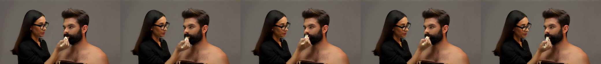

RDD Video + C2F
Video page · Diff viewer source · Training details
The HTML video page is for local viewing; on GitHub use the individual video links below. To generate the local diff page, run python rdd/review.py.
Implementation
RDD reuses the Wan backbone at increasing resolutions. It changes the flow path and velocity target; stage transitions recover clean latents, upsample, and apply noise filling.
| Added file | Function |
|---|---|
| rdd/flow.py | RDD path, velocity target, clean recovery, noise filling |
| rdd/finetune.py | Wan training adapter and continuous Euler sampler |
| rdd/train.py · config | Official Trainer integration and hyperparameters |
| rdd/dense_c2f.py | C2F self-attention hook for the finetuned, non-VSA Wan |
| rdd/sample_finetuned_c2f.py | Paired sampling and repeated timing |
| rdd/attention.py | Legacy FastWan/VSA C2F controller and route utilities |
| rdd/sampler.py · run.py | Legacy DMD3 sampling; separate from Euler50 |
Legacy FastWan/DMD3 usage: inference guide.
Official fastvideo/ and fastvideo-kernel/ remain unchanged from fastvideo-base (2413a576). No new prediction head or learned transition.
Finetune
We finetune the original Wan2.1-T2V-1.3B with the RDD flow-matching objective, updating the full Transformer.
| Training | Configuration |
|---|---|
| Base | Wan-AI/Wan2.1-T2V-1.3B-Diffusers; non-DMD |
| Data | Mixkit preencoded latents; 384 train / 32 held-out clips |
| Parameters | Full Transformer; frozen T5/VAE; dense FlashAttention |
| Loss | Drift-aware velocity MSE; uniform time sampling |
| Optimizer | AdamW; LR 1e-5; 100-step warmup |
| Batch | 8-GPU FSDP; 1/GPU × accumulation 2 = global 16 |
| Precision | FP32 master/residual; BF16 mixed compute |
| Updates | 5,003; before/after preview at 0 / 5,000 |
| Stage | Low | Middle | High |
|---|---|---|---|
Factor (spatial, temporal) |
(4,1) | (2,1) | (1,1) |
Latent T×H×W |
8×14×26 | 8×28×52 | 8×56×104 |
| Tokens | 728 | 2,912 | 11,648 |
| Data-time interval | 0–0.4 | 0.4–0.7 | 0.7–1 |
| Euler updates | 20 | 15 | 15 |
| Sampling | Configuration |
|---|---|
| Output | 832×448; 29 frames; 16 fps |
| Schedule | Euler50 + 2 boundary evaluations; CFG5; flow shift 1 |
| Model calls | 104, including conditional/unconditional branches |
| Transition | Clean prediction → nearest upsample → fresh IID noise |
| Seed | 20260926 |
300/300/400 denotes high/middle/low time allocation. 1,000 is the model's time scale, not the sampling step count.
Results
Same prompt, seed and sampler; only weights change. Both sides use RDD with dense attention, without C2F.
0 updates · Original Wan + RDD
5,000 updates · Finetuned Wan + RDD
Play both from the start, or use individual controls.
Before · After · Metadata: before / after

Recognizable composition replaces color blocks. Hand/face artifacts and limited motion remain; this example is not a generalization benchmark.
Original full-resolution Wan reference
Original weights; Euler50 / CFG5 / flow shift 1; 100 model calls. Not an optimized official Wan sampler.
C2F
Use each stage's endpoint Q/K to select block routes for the next stage. Recompute current Q/K/V and sparse attention every step.
| Component | Configuration |
|---|---|
| Hook | Self-attention after RoPE; cross-attention/MLP unchanged |
| Low stage | Dense |
| Routing | Mean-pool Q/K in 4×4×4-token tiles → block QK → Top-K |
| Transfer | Custom Triton route lift: parent links → child-block indices |
| Refresh | Low endpoint guides middle; middle endpoint guides high |
| Cache | Routes only; separate per layer/head/CFG branch; fixed within a stage |
| Keep fraction | 50%, 30%, 20%, 12.5%; self block included |
| Actual keep at requested 20% | Middle 24.86%; high 22.03% of block pairs |
| Weights | Checkpoint-5003; no C2F finetuning |
No cached attention probabilities or AV outputs. Route construction still runs at stage endpoints.
Kernels
| File | Ownership / operation | Used below |
|---|---|---|
| route_lift.py | Custom Triton: coarse routes → compact fine indices/counts | Yes |
| block_sparse_attn.py → Triton executor | Unmodified upstream: selected QK, softmax, AV | Yes |
| smallq.py | Custom Triton: 16/32-token query tiles | No; legacy option |
| noise_filling.py | Custom Triton: fused upsample/noise blend | No; legacy option |
Results
Baseline: finetuned dense RDD, not VSA. Same sampling configuration as above.
| Keep | Denoise, s | Latency reduction | +VAE, s | Total reduction | Visual result |
|---|---|---|---|---|---|
| Dense | 14.582 | Baseline | 16.027 | Baseline | Reference |
| 50% | 14.967 | −2.64% | 16.412 | −2.40% | Closest; slower |
| 30% | 14.229 | 2.42% | 15.673 | 2.21% | Local distortion |
| 20% | 13.917 | 4.56% | 15.361 | 4.16% | Structural artifacts |
| 12.5% | 13.582 | 6.86% | 15.026 | 6.25% | Severe artifacts |
| Timing protocol | Value |
|---|---|
| Hardware | Single RTX PRO 6000 Blackwell Server Edition |
| Repeats | 1 warmup/method; 5 interleaved rounds; median |
| Included | Denoising, boundary/route work; VAE in total |
| Excluded | Loading, text encoding, initial compilation, MP4 export |
| Scope | Makeup prompt timing; 3 prompts for visual inspection |
Raw timing. Reduction = 1 − method/baseline; negative means slower. No demonstrated quality-preserving 10–20% gain; no FVD/VBench evaluation.
Each grid: top-left dense; top-right 50%; bottom-left 20%; bottom-right 12.5%.
Makeup
Dense · 50% · 30% · 20% · 12.5% · Config
Dog
Dense · 50% · 30% · 20% · 12.5% · Config
Bedroom
Dense · 50% · 30% · 20% · 12.5% · Config
Historical Benchmark
FastWan DMD3, not the finetuned Euler50 model. Same model, VSA20, resident execution; 5 warmups + 30 interleaved rounds; 832×448×29. No VAE timing.
RDD vs. Fixed Resolution
| Spatial factors | Denoise + boundary, s | Speedup | Latency reduction |
|---|---|---|---|
| 1→1→1 | 0.8550 | 1.00× | 0% |
| 2→2→1 | 0.4214 | 2.03× | 50.71% |
| 4→2→1 | 0.4135 | 2.07× | 51.64% |
| 4→4→1 | 0.4041 | 2.12× | 52.74% |
These weights were not RDD-finetuned; timings do not establish equal-quality speedup. A matched full-resolution benchmark for the new finetuned Euler50 model remains unmeasured.
C2F vs. VSA
| Spatial factors | RDD + VSA20, s | RDD + legacy C2F, s | Latency reduction |
|---|---|---|---|
| 2→2→1 | 0.42141 | 0.41223 | 2.18% |
| 4→2→1 | 0.41347 | 0.41290 | 0.14% |
| 4→4→1 | 0.40412 | 0.39634 | 1.93% |
| Limitation | Explanation |
|---|---|
| Unfair legacy comparison | c2f_route_only removed VSA's coarse-output branch; keep ratios also differed (~25% vs.20% for 421) |
| Coarse output | VSA uses softmax(QcKcᵀ/√d)Vc in its gated output; retaining it requires current coarse attention |
| Small savings | Block-level routing is relatively cheap; projections, MLP, selected QK/AV and VAE remain |
| Added overhead | Route mapping, packing, padding and kernel launches offset savings |
| Quality | Fixed coarse routes can miss new details and become stale |
These records do not establish a fair, quality-preserving advantage over VSA. The current non-VSA Wan has no coarse-output branch to remove.
Code & Data
| Resource | Location |
|---|---|
| Full training configuration | YAML |
| Inference instructions | FINETUNED_C2F.md |
| Final checkpoint | checkpoint-5003; weights/data are not included in this repository |
| Media / evidence | rdd_media/ · SHA256 manifest |
| Diff | git diff fastvideo-base HEAD; fetch the fastvideo-base tag for the pinned upstream comparison |
Training-preview timings are not used as inference benchmarks.